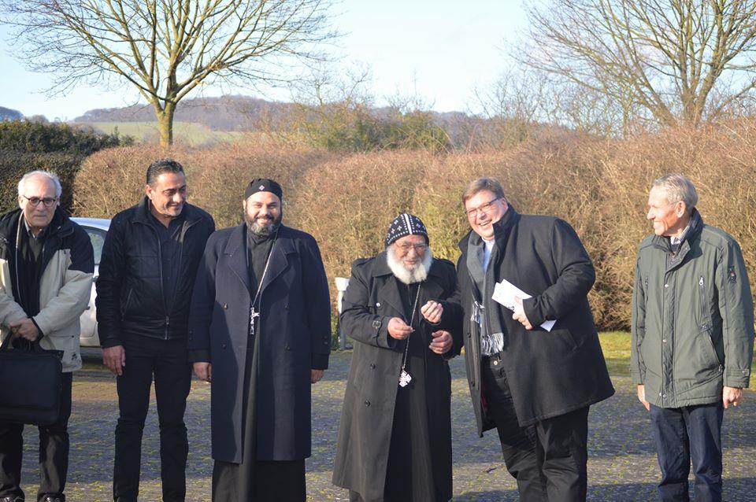

76 Anlässlich des 40-jährigen Jubiläums des St-Antonius-Klosters in Kröffelbach widmet diese Ausgabe des St. Markus einen Großteil diesem Kloster und dem koptischen Mönchtum im Allgemein. Bild:https://www.wataninet.com/2019/12 Nach dem Notartermin haben Pastor Stefan Dumont und der Zweite Vorsitzende des Verwaltungsrates, Rudi Reichling, einen ersten Schlüssel von St. Albert an Bischof Anba Michael und den zukünftigen koptischen Priester in Andernach überreicht.
St. Markus · 2020 · Deutsch
Pastor Stefan Dumont überreicht einen ersten Schlüssel von der St-
Ausgabe 1 · Seite 76
